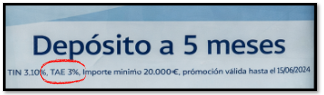

La TAE parte del interés efectivo anual, pero añade lo que faltaba:
el efecto conjunto de la capitalización y de los costes habituales, traducido a un único porcentaje anual.
Por eso, si el TIN sirve para anunciar y el interés efectivo sirve para entender cómo se aplican los intereses, la TAE es la que realmente te permite comparar opciones y decidir con criterio.
Veámoslo con un ejemplo real:
Primer nivel: El TIN
|
¿Cómo podemos interpretar este cartel? Imagina que tienes un dinerillo ahorrado y el banco te propone algo muy sencillo: dejar ese dinero allí durante 5 meses y, al final, devolvértelo con un poco más. A eso se le llama depósito, pero la idea básica es solo esa: tú prestas tu dinero durante un tiempo y el banco te paga por usarlo. En el cartel el banco destaca un TIN del 3,10 %, que es el interés anual “de escaparate”, el número grande que llama la atención. Ese porcentaje está pensado para un año completo y, desde el primer momento, no coincide con lo que realmente va a pasar, porque tu dinero no va a estar invertido 12 meses, sino solo cinco. |
🚨 Aquí aparece la primera alerta importante:
el TIN no es lo que vas a ganar. Es solo un dato anual de referencia. En cuanto cambia el tiempo, cambia el resultado, y por eso necesitamos mirar algo más.
Segundo nivel: El tipo de interés efectivo
| El siguiente nivel es el tipo de interés efectivo, que tiene en cuenta cómo se aplican realmente los intereses durante esos cinco meses. Este tipo ya incorpora el factor tiempo, pero sigue hablando solo de intereses, sin considerar otros posibles costes. Por eso, desde este punto, el TIN y el interés efectivo tampoco coinciden: uno es un dato anual teórico y el otro refleja lo que ocurre en el periodo real. |
|
👉 Y no es casualidad. Este tipo no suele mostrarse de forma explícita porque no es un dato que las entidades publiciten directamente, sino un cálculo que refleja cómo actúan realmente los intereses en el tiempo. Es decir, está “detrás” de la operación, no en el escaparate. 👉 Por eso, para entenderlo, no basta con leer el cartel… hay que ir un paso más allá. |
Tercer nivel: La TAE
|
Y entonces aparece el tercer dato clave del cartel: la TAE del 3 %. La TAE sirve para traducir lo que ocurre en esos cinco meses a un equivalente anual y poder compararlo con otras opciones, 🚨Pero aquí llega la segunda alerta importante: la TAE no solo tiene en cuenta el tiempo y los intereses, sino también si existen gastos o comisiones que reducen el rendimiento real. |
 |
Por eso, desde el minuto cero, TIN, interés efectivo y TAE son magnitudes distintas y no coinciden, porque cada una responde a una pregunta diferente.
En este caso concreto, si solo tuviéramos en cuenta el interés y el tiempo, la anualización del rendimiento de cinco meses daría lugar a una TAE ligeramente superior al TIN. Sin embargo, el cartel muestra una TAE inferior, y esta es la alerta clave:
cuando la TAE sale más baja de lo que “tocaría” por intereses, no es casualidad, es una señal de que existe algún coste asociado a la operación —una comisión de apertura, un gasto de gestión o una condición económica— que reduce el rendimiento final del ahorrador.
Ese coste no cambia el TIN, porque el interés nominal sigue siendo el mismo, ni altera cómo se calculan los intereses, pero sí afecta al resultado final, y por eso se refleja en la TAE.
En ese caso, no coinciden ninguno de los tres:
- el TIN sigue siendo el número del cartel,
- el interés efectivo sigue hablando solo de intereses, y
- la TAE es la que incorpora el efecto conjunto del tiempo, el interés y los gastos.
🚨Por eso, la alerta final es clara:
que los números se parezcan no significa que sean iguales, y cuando la TAE baja respecto a lo que esperas, te está avisando de que algo resta por el camino.
Precisamente por eso, cuando se trata de decidir entre distintas opciones, la TAE es la referencia clave: no porque sea perfecta, sino porque es la que mejor resume cuánto te cuesta o cuánto te rinde realmente el dinero y la que permite comparar productos con más seguridad y criterio.
🎬▶️🍿
| Para asentar bien todos los conceptos, saca las palomitas y dale al play en este resumen que te he preparado en forma de video 🍿🎥 |